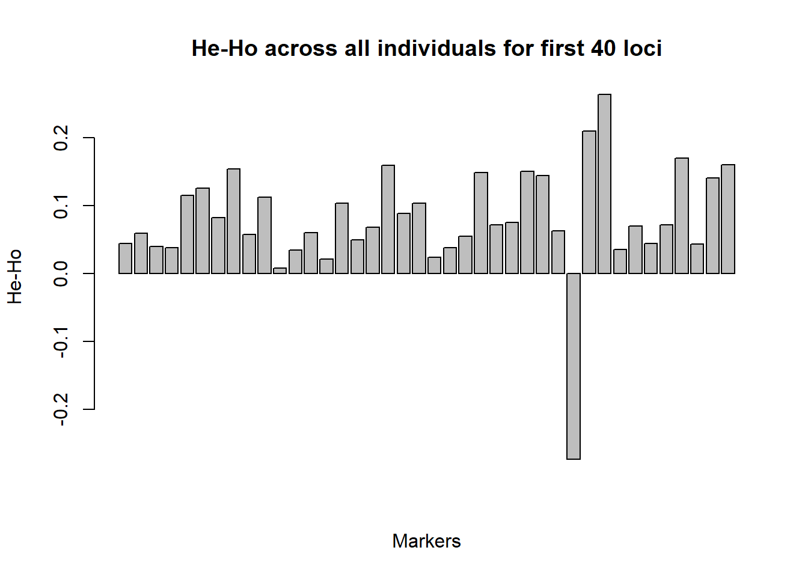
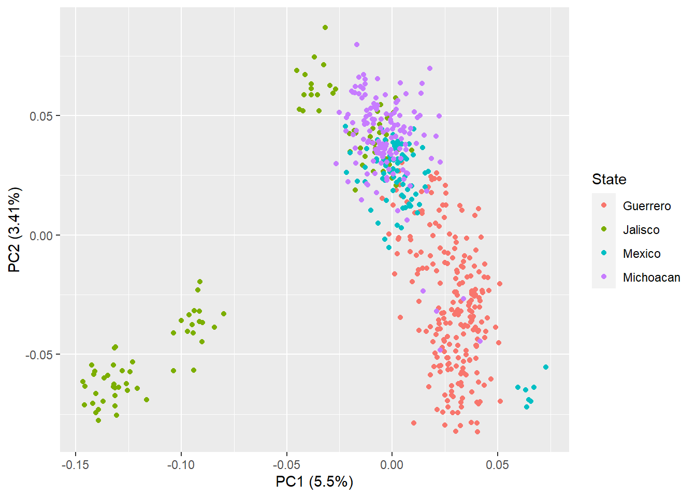
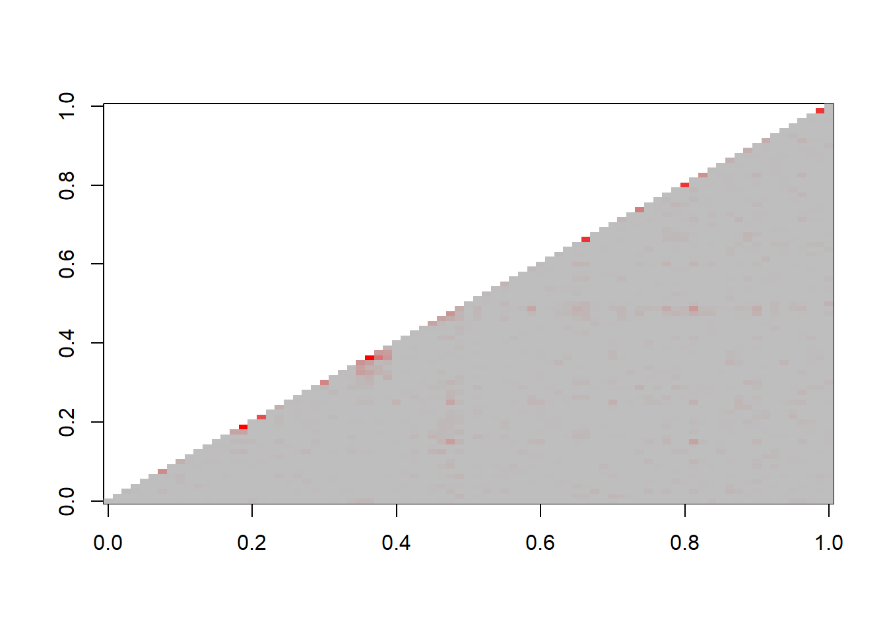
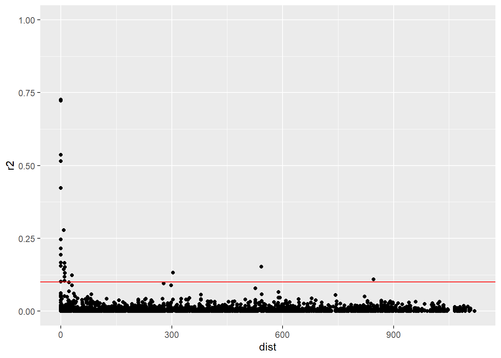
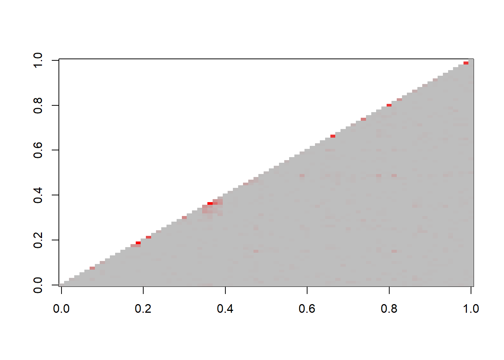

Chapter 7 Population genetics.
7.1 Hardy-Weinberg equilibrium and population structure
Hardy-Weinberg equilibrium frequencies and population subdivision (Fst)
In the absence of the action of evolutionary forces (selection, mutation, migration, non-random mating, genetic drift), genotypic frequencies in a population follow directly from the individual allele frequencies in the population. This is called “Hardy-Weinberg equilibrium.” However, in most populations and in particular in breeding populations, the conditions under which HW hold are not very realistic. Nevertheless, when averaged over multiple markers, the HW test provides a simple means of assessing inbreeding, selfing, or population mixing in genetic samples. In particular, it is useful for detecting population sub-structure within a population.
To illustrate this, we will use a subset of a Teosinte (Zea mays ssp. parviglumis) data set published by Weber et al. (2007). Teosinte is the wild, outcrossing ancestral species from which maize was domesticated. Details of the entire data set can be found in the paper. Here we will use data of 592 SNP markers from 544 genotypes. The genotypes can be classified in four groups based on the geographical origin (States in Mexico).
Teosinte distribution over the states of Mexico
The table below shows a SNP genotype frequency for a marker (for all individuals in the data set).
| PZA00219_6 | N.individuals |
|---|---|
| A/A | 163 |
| A/G | 158 |
| G/G | 213 |
Use the information in the table to answer the following questions:
1
a: Based on the information in the table, give the allele frequencies, the observed (Ho) and expected (He) heterozygocity, and the fixation index (F) for the marker.
b: What do the results in (a) suggest in terms of population structure? Explain.
c: Test whether the population is in HW equilibrium based on this marker (to do this you will need to do a Chi-square test by hand).The table below gives the same information for SNP PZA00219_6 but separated by group (defined by the Mexican state in which they were collected).
| PZA00219_6 | Guerrero | Jalisco | Mexico | Michoacan |
|---|---|---|---|---|
| A/A | 30 | 79 | 18 | 36 |
| A/G | 61 | 5 | 29 | 63 |
| G/G | 134 | 9 | 31 | 39 |
Use this table to address the following questions:
2
a: Give the Ho, He, and F for the states Guerrero and Michoacan for marker PZA00219_6.
b: Test whether the groups are in HW equilibrium for this marker.
c: Compare the results with those in the quiz block above. How do you explain the differences?Your conclusions so far above are based on only one/two loci. We will now look across all loci using a set of three related R packages: adegenet (Jombart 2008) which is a general purpose genetic data analysis package, and the population genetic packages pegas (Paradis et al. 2020) and hierfstat (Goudet and Jombart 2020) which use the adegenet data format.
For the next part of the tutorial, there are a large number of R commands so we will move to working from a pre-made script. You will need to install the packages adegenet, pegas and hierfstat to you own R environment.
Set your home directory to a folder containing today’s data files. For the “genind” data format used in adegenet, it is easier to read in the genotype data and population classification of individuals from separate input files. Take a look at the datafiles – “teosinte_genos_R.txt” and “teosinte_pops_R.txt” – to see the format required. Then read in the data files “teosinte_genos_R.txt” and “teosinte_pops_R.txt,” these data files are found on the course website.
# Load required libraries. adegenet and its associated packages are good for population genetic analysis in R
library(adegenet)
library(pegas)
library(hierfstat)
# read in the data for genotypes and population codes separately.
#you will need to delete "data/" if you copy this script
genos<-read.table("data/teosinte_genos_R.txt", header=T)
pops<-read.table("data/teosinte_pops_R.txt", header=T)When loaded, convert to the “genind” format, add in the population information, and check that you have inputted the data correctly:
# convert to genind data format
teosinte<- df2genind(genos,ploidy=2,sep="/")
# add in the population information
teosinte@pop<-as.factor(pops$pop)
#check that the data is as expected
teosinte## /// GENIND OBJECT /////////
##
## // 544 individuals; 592 loci; 1,184 alleles; size: 2.8 Mb
##
## // Basic content
## @tab: 544 x 1184 matrix of allele counts
## @loc.n.all: number of alleles per locus (range: 2-2)
## @loc.fac: locus factor for the 1184 columns of @tab
## @all.names: list of allele names for each locus
## @ploidy: ploidy of each individual (range: 2-2)
## @type: codom
## @call: df2genind(X = genos, sep = "/", ploidy = 2)
##
## // Optional content
## @pop: population of each individual (group size range: 80-227)First we make a summary of the data, which includes the observed and expected heterozygosities for every marker, assuming that all individuals belong to a single population.
#make a population genetic summary of the data set considering it as a single population
Teo_Summary<-summary(teosinte)Inspect Teo_Summary on your own computer.
We can calculate the “fixation index” as you did earlier in the exercise, and also plot Ho-He for a subset of markers to see if there are any patterns. What do you observe?
# plot Ho-He for the first 40 markers
barplot(Teo_Summary$Hexp[1:40]-Teo_Summary$Hobs[1:40],xaxt='n',main="He-Ho across all individuals for first 40 loci", ylab= "He-Ho", xlab="Markers")
# calculate F values
Fvalues<-1-(Teo_Summary$Hobs/Teo_Summary$Hexp)Now we can test agreement with HW expectations at each locus.
#test for Hardy-Weinberg equilibrium at each marker separately
hwt.all<-hw.test(teosinte, B=0)Inspect the first 40 markers on your own computer by running: hwt.all[1:40,1:3]
We can count how many of the 592 HW tests we have done are significant at the 5% level. (In R, the sum function will count the number of times a condition is TRUE when used as in the script here).
# count the number of markers that significantly deviate from HW equilibrium with P<0.05
sum(hwt.all[,3]<0.05)## [1] 559Next, calculate the average Ho, He and F across all markers:
# Calculate average (se) of Ho, He, F across all markers
se <- function(x) sqrt(var(x)/length(x))
Ho_ave<-round(mean(Teo_Summary$Hobs),4)
Ho_se<-round(se(Teo_Summary$Hobs),4)
He_ave<-round(mean(Teo_Summary$Hexp),4)
He_se<-round(se(Teo_Summary$Hexp),4)
F_ave<-round(mean(Fvalues),4)
F_se<-round(se(Fvalues),4)
Average_table<-data.frame(NA,nrow=5,ncol=3)
Average_table[1,1]<-paste(Ho_ave, "(", Ho_se, ")")
Average_table[1,2]<-paste(He_ave, "(", He_se, ")")
Average_table[1,3]<-paste(F_ave, "(", F_se, ")")
colnames(Average_table)<-c("Ho", "He", "F")
rownames(Average_table)[1]<-c("All")
Average_table## Ho He F
## All 0.2871 ( 0.004 ) 0.3747 ( 0.0043 ) 0.2327 ( 0.0059 )Then we can test the hypothesis that Ho-He is significant across all markers using a paired t-test, firstly checking if the Ho and He variances are equal. Is the result as expected?
bartlett.test(list(Teo_Summary$Hexp, Teo_Summary$Hobs))##
## Bartlett test of homogeneity of variances
##
## data: list(Teo_Summary$Hexp, Teo_Summary$Hobs)
## Bartlett's K-squared = 3.1346, df = 1, p-value = 0.07665Test the hypothesis that Hobs>Hexp across all markers:
t.test(Teo_Summary$Hexp, Teo_Summary$Hobs, pair=T, var.equal=TRUE, alter="greater")##
## Paired t-test
##
## data: Teo_Summary$Hexp and Teo_Summary$Hobs
## t = 34.023, df = 591, p-value < 2.2e-16
## alternative hypothesis: true difference in means is greater than 0
## 95 percent confidence interval:
## 0.08336362 Inf
## sample estimates:
## mean of the differences
## 0.08760561We will now rerun these analyses for each state separately. The script shows how to do this for Mexico state (MEX).
#separate into "populations" by state:
teosinte_bypop<-seppop(teosinte)
teo.GUE<-summary(teosinte_bypop$GUE)
teo.JAL<-summary(teosinte_bypop$JAL)
teo.MEX<-summary(teosinte_bypop$MEX)
teo.MIC<-summary(teosinte_bypop$MIC)
# repeat above analysis for MEX only
barplot(teo.MEX$Hexp[1:40]-teo.MEX$Hobs[1:40], xaxt='n', main="He-Ho in MEX for first 40 loci ", ylab= "He-Ho", xlab="Markers")
Fvalues<-1-(teo.MEX$Hobs/teo.MEX$Hexp)
hwt.MEX<-hw.test(teosinte_bypop$MEX, B=0)
hwt.MEX[1:40,1:3]
sum(hwt.MEX[,3]<0.05)
Ho_ave.MEX<-round(mean(teo.MEX$Hobs),4)
Ho_se.MEX<-round(se(teo.MEX$Hobs),4)
He_ave.MEX<-round(mean(teo.MEX$Hexp),4)
He_se.MEX<-round(se(teo.MEX$Hexp),4)
F_ave.MEX<-round(mean(Fvalues),4)
F_se.MEX<-round(se(Fvalues),4)
Average_table[2,1]<-paste(Ho_ave.MEX, "(", Ho_se.MEX, ")")
Average_table[2,2]<-paste(He_ave.MEX, "(", He_se.MEX, ")")
Average_table[2,3]<-paste(F_ave.MEX, "(", F_se.MEX, ")")
rownames(Average_table)[2]<-c("MEX")
Average_table
bartlett.test(list(teo.MEX$Hexp, teo.MEX$Hobs))
t.test(teo.MEX$Hexp, teo.MEX$Hobs, pair=T, var.equal=TRUE, alter="greater")For other populations, I have compiled the data in the exercise below.
So for doing the same for all states, we get the following values for Ho, He and F.
| Ho | He | F | |
|---|---|---|---|
| Entire population | 0.287 (0.004) | 0.375 (0.004) | 0.233 (0.006) |
| Guerrero | 0.298 (0.004) | 0.375 (0.004) | 0.203 (0.007) |
| Jalisco | 0.221 (0.005) | 0.326 (0.006) | 0.295 (0.009) |
| Mexico | 0.312 (0.005) | 0.362 (0.005) | 0.137 (0.008) |
| Michoacan | 0.300 (0.005) | 0.357 (0.005) | 0.157 (0.007) |
Finally, we can calculate F statistics, considering each state as a population. This takes a few minutes so we provide the values here. Averaged over all loci , these are shown below this paragraph. \(F_{IS}\) is a measure of within population inbreeding, \(F_{IT}\) is a measure of total inbreeding and \(F_{ST}\) is a measure of population divergence. Note that \(1-F_{IT} = (1-F_{IS})(1-F_{ST})\), as it should be.
By now you may have some opinion on the importance of the population structure in this data set. You may also have noticed some differences among the sub-populations. We will further investigate this using principal component analysis (PCA) of the entire molecular marker matrix using R. PCA is a statistical technique which summarizes the variation observed across all markers into a smaller number of underlying component variables. Each principal component accounts for a decreasing amount of variation in the dataset, e.g. PC1 accounts for the highest amount of variability in the original data as possible, and each subsequent PC explains the highest amount of variance possible in the remainder of the data. As a result, PCA finds the number of effective dimensions in the data defined by the significant PCA axes. If two major groups are present one dimension (PC1) might be enough to describe it. If three, then an extra axis might be necessary, and so on and so forth.
The data for this analysis are in a file called “teosinte_imputed_R.txt.” I have imputed missing data in this data set – you will learn more about this later in the course (for the previous analysis, missing data were left as “NA”). We will use some simple R code to conduct a PCA on the data.
Let us load the data and required package ggfortify, you will need to install this if you don’t have it already.
library(ggfortify)
#load data (delete 'data/' if you copy this!)
teosintepca<-read.table("data/teosinte_imputed_R.txt", header=T)First we fit the PCA and observe (and plot) the percentage of variance explained by each of the first 10 PCs.
#define pca input (markers only, not state name)
pca.input<-teosintepca[c(1:592)]
#run PCA
pca.output<-prcomp(pca.input)List the first 10 PCAs on your computer by running:
summary(pca.output)$importance[,1:10]We can also plot the proportion of variance explained by first 10 PCAs by running:
plot(summary(pca.output)$importance[2,1:10], main="PCA analysis - Teosinte", ylab="percentage variance explained", ylim=c(0,0.06),xlab="PCA", lty=par("lty"), lwd=par("lwd"))
lines(summary(pca.output)$importance[2,1:10])Inspect these outputs to comment on the following question:
Now, we will plot the first two PCs against each other, colouring the points by geography (state).
#plot first 2 PCAs
autoplot(pca.output, data=teosintepca, colour='State')
Take a look at this plot and address the questions below:
7
a: Describe what you see in the plot. Is there (some) agreement with the classification purely on the geographical origin?
b: Based on the scatter plot you have just made, what seems to be odd about the group “Jalisco?” How does your observation here correspond with your findings in the fixation index for this sate?We could have also plotted the alternative PCs (1 and 3 here). Try running this on your laptop.
pca_extra=pca.output
pca_extra$x=pca_extra$x[,c(1,3)]
colnames(pca_extra$x)=c("PC1","PC2")
pca_extra$rotation=pca_extra$rotation[,c(1,3)]
colnames(pca_extra$rotation)=c("PC1","PC2")
autoplot(pca_extra, data=teosintepca,colour='State')+labs(y="PC3")Given what we have observed with the PCA investigation, it seems that state boundaries may not be the best way of grouping populations. Looking at the output from the PCA, it seems 3 states (Jalisco, Mexico and Michoacan) may have at least 2 groups of distinct individuals in them. A closer look at the data reveals that in all 3 states, these individuals represent distinct natural populations. If we sub-divide the samples of each of these 3 states into 2 geographic groups based on the PCA data, we now have 7 geographic groupings. We can see what difference this makes to our population statistics by recalculating the Ho, He and F values, and the F statistics using the methods from part c above. Feel free to do this (replace the original pop file with the file “teosinte_pops_subdivided_R.txt”) and explore the data. You will obtain the following summary.
| Ho | He | F | |
|---|---|---|---|
| Entire population | 0.287 (0.004) | 0.375 (0.004) | 0.233 (0.006) |
| Guerrero | 0.298 (0.004) | 0.375 (0.004) | 0.203 (0.007) |
| Jalisco 1 | 0.199 (0.007) | 0.245 (0.007) | 0.161 (0.011) |
| Jalisco 2 | 0.242 (0.006) | 0.329 (0.006) | 0.244 (0.010) |
| Mexico 1 | 0.318 (0.005) | 0.358 (0.005) | 0.110 (0.008) |
| Mexico 2 | 0.249 (0.009) | 0.245 (0.008) | -0.025 (0.015) |
| Michoacan 1 | 0.301 (0.005) | 0.355 (0.005) | 0.151 (0.007) |
| Michoacan 2 | 0.293 (0.009) | 0.306 (0.007) | 0.020 (0.018) |
\(F_{IS}\), \(F_{IT}\), \(F_{ST}\) averaged over all loci:
The reassignment of populations based on the PCA here seems a bit ad hoc. Data exploration of this kind is very important in population genetics but there are more powerful methods for exploring how many “true” populations there are in a geographic data set, as well as how to assign individuals of unknown provenance to these populations. We will explore these methods more this afternoon.
7.2 Other ways of analysing population structure
7.2.1 Distance Trees
We have examined population structure in natural populations of Teosinte, an outbreeding species. For contrast, and to see what plant breeders are more likely to encounter, we now investigate population structure in a breeding population of a self-pollinated species (barley). The data to be used is from a UK association mapping study of barley (AGOUEB, and includes 1500 mapped SNPs for 621 genotypes (varieties). We’ll run our analysis on the barley AGOUEB data set, using SNPs from across the whole genome but thinned so that markers are >2cM away from each other. This prevents results being dominated by patterns of diversity from particular chromosome regions (especially the centromere – lots of markers but very little recombination). Thinning in this manner has become standard practice. It is easily forgotten but is important. In this case, 307 markers remain to estimate relationships between the genotypes. Note that markers were scored as 0, 1 or “NA,” because we are dealing with inbred lines, so there are no heterozygotes. However, for one of the approaches below (bootstrapping) no missing data is allowed. Therefore, I have imputed the missing data. The imputed values should be clear as they have values intermediate between 0 and 1. Data are in “AG_for_R.txt,” already formatted.
We are going to scale the data so that each marker has mean 0 and standard deviation 1. That way they all have equal weight in the analysis.
#load barley data, take out /data if you copy this
AG_data<-read.table("data/AG_for_R.txt", header=T)
#scale data so all markers have mean=0, sd=1
AG_scaled<-as.data.frame(scale(AG_data))Check that this has worked by running the following on your computer:
#check scaling worked
mean(AG_scaled$GM1,na.rm=T)
sd(AG_scaled$GM1,na.rm=T)Then calculate a distance matrix (distance between all lines). Here we are using a simple “Euclidean” measure, based on geometric distance; other options are available.
#calculate a distance matrix
dist_mat<-dist(AG_scaled, method='euclidean')We can then use this distance matrix in two different clustering approaches. Firstly, Neighbor joining. A basic method of agglomerative clustering method where individuals are grouped into progressively higher order clusters. Bootstrapping is a method of obtaining confidence in each node:
#use neighbor joining with bootstrapping
par(cex=0.7) #changes font size so you can see more labels
tree<-nj(dist_mat)
boot.tree<-boot.phylo(tree,AG_scaled,FUN =function(x) nj(dist(x)),B=100)##
Running bootstraps: 100 / 100
## Calculating bootstrap values... done.Now we can plot the tree:
plot(tree)
nodelabels(boot.tree,frame="none")Our second option is Principal Coordinate Analysis. For this dataset, PCoA is probably more informative than a tree. PCoA is related to, but different from Principal Component Analysis; PCoA analysis is based on distances between pairs of individuals.
Install and load the package called labdsv for principal co-ordinate analysis (there are many alternatives available).
library(labdsv)Carry out principal co-ordinate analysis:
AG_pco<-pco(dist_mat,k=10)Plot the eigenvalues:
plot(AG_pco$eig)Tabulate percentage variation explained by top 10 eigenvalues:
pcntvar<-AG_pco$eig/sum(AG_pco$eig)
pcntvar[1:10]## [1] 0.18035911 0.05144023 0.02956470 0.02314040 0.02253805 0.01925869
## [7] 0.01824109 0.01648530 0.01535072 0.01433016Plot the first two pco axes:
plot(AG_pco)
You can also plot different pairs of pco axes using something like plot(AG_pco$points[,1],AG_pco$points[,3]).
Use your inspection of the PCoA results to answer the following questions:
10
a: Examine the Eigenvalues for the first 10 axes in the text output. What does this tell you about the structure in this data set?
b: Examine the graph for Axes 1 vs 2 but also axes 1 vs 3 and 2 vs 3. Compare your findings for the 2 approaches (NJ tree vs PCoA).
c: How many “natural” groupings do you think there are in this data set?7.3 Structure
This exercise is to show you how to run STRUCTURE. STRUCTURE is easy to run but has its pitfalls. This guide should not be used as a substitute for the STRUCTURE manual, which gives more detailed guidance. First, download STRUCTURE from here.
7.3.1 What STRUCTURE does
Imagine a population of a randomly mating diploid. Suppose we have a genome-wide set of markers, not necessarily mapped, but not closely linked to one another. Studying a sample of individuals from a single population, we would expect each marker to be in Hardy-Weinberg equilibrium. We would also expect every pair of markers to be in linkage equilibrium. Now imagine a second population of the same species. This too should be in equilibrium between and within markers. Suppose the populations have been separated for long enough that their allele frequencies have diverged and that mating within each population is at random. Now if we have a single sample drawn from both populations, but we don’t know the origin of the individuals in the sample, then we’ll find that the population is no longer in HW equilibrium nor in linkage equilibrium. However, by trial and error, we could allocate individuals to populations until we found the division which give HW proportions and no LD within each of the populations. In practice, allocating individuals by trial and error is impossible. STRUCTURE does this allocation for us by use of a model based Bayesian approach. It has proven tremendously successful. The source publication has been cited >2000 times according to Google Scholar. STRUCTURE will cope with more complex scenarios than that described above such as: more than two populations; ploidy levels other than diploid; ancestry of individuals mixed between populations; modest linkage between markers. Latest versions handle dominant markers. Other related programs focus on specific scenarios such as:
STRUCTURAMA (available from same site as STRUCTURE). An alternative to STRUCTURE which includes calculation of the number of populations. Only works for outcrossed diploids.
INSTRUCT. An alternative to STRUCTURE which works for partial selfers – estimates selfing rate simultaneously. It is available as a command line driven stand-alone or as a web based application run remotely from here: http://cbsuapps.tc.cornell.edu/InStruct.aspx.
More recently, ADMIXTURE uses the same statistical model as STRUCTURE but a faster optimization algorithm. Furthermore, ADMIXTURE is now available for R and has recently been successfully used by our colleagues in this format, so is worth exploring.
7.3.2 Limitations of STRUCTURE
It takes time to run
Individuals are assumed to be random mating within populations – problems for mixed mating systems.
It is often not easy to decide on the number of sub-populations.
It is best at de-convoluting distant splits in population structure rather than more recent co-ancestry
Just as for PCoA, tree drawing, and most other methods of displaying genetic relationships, it is important to remember that the answer you get will depend on the distribution of markers. Once again, unlinked, or only loosely linked markers are advised for STRUCTURE. This is important. Remember to thin your markers if their distribution is patchy with clumps of markers in high LD. In our analysis, the markers have already been thinned we shall treat them as unlinked. In practice, this is what most people seem to do.
A note on selfing and ploidy. If species are obligate or near obligate selfers, then they should be analysed as haploids in STRUCTURE. Otherwise STRUCTURE will attempt to assign individuals to groups which are in HW equilibrium, and with a population of near-inbred lines, spurious clusters will result. For the few heterozygous markers that there may be, in something like barley for example, the simplest procedure is to switch these markers off. This is throwing out data, so as the degree of outcrossing increases it becomes more and more costly. The programme INSTRUCT should overcome these limitations; if you have a dataset for a crop with a more mixed mating system, then it is worth a go.
7.3.3 Using Structure
We will now again use the barley data from the AGOUEB project, thinned to 307 markers. The format of the data can be seen in the file “AG for Struct.txt.” First we will learn how to use structure. Then, when we have some data, we will run through an exercise of how to interpret the data.
First we need to enter the data and learn how to set up a run. Structure guides you through data input process using a Windows style import wizard. To start the data import window: File, New Project…
Step 1
Enter the project name and select a directory and the input file. This process can be a fiddle – sometimes you have to click once to select, and sometimes twice. Trial and error should see you through, however.
Step 2
Enter information about the data. If you’ve forgotten or don’t know this, clicking on “Show data file format” may help.
Don’t forget to enter the “Missing Data Value.” If you don’t do this, the missing data will be treated as an extra allele. In this data file, the missing is -9 which is also the default.
Ploidy: For a collection of inbred lines enter 1 here to treat the data as haploid. Number of loci – look in the dataset
Step 3
This formats data input for any additional columns or rows in the file.
Select the row of marker names – our file includes this.
We are not using map data – Linkage information can be included in the analysis for loosely linked markers. Map distances between markers can be included at the top of the input file. See the STRUCTURE manual for details. Generally, good results are obtained treating markers as unlinked. In fact for markers which are linked and in high LD (\(r^2>0.9\) or even less) it is worth deleting one of the pair (our marker thinning here has effectively done this).
Phase information: irrelevant here because we are dealing with a haploid organism! Generally, with outbred polyploid individuals, this box would need ticking if the phase was known. See the manual for further details.
Data file stores data for individuals in a single line: This also does not apply to haploids. With diploids, data may be entered on a single line as:
1 1 2 2 3 3 4 4 for four loci
or as:
1 2 3 4
1 2 3 4 The second format is the default for STRUCTURE.
Step 4
Individual ID for each individual: we have a unique variety code as the first column of our data, so select this.
Putative population of origin for each individual: With a priori knowledge of the population of origin of each individual, this can be entered and included in the analysis. This can work extremely well if, for example, you have a set of lines of known origin, and a set of unknown or admixed individuals. The data from the known lines is effectively used as a training set to classify the unknown lines. Here, leave it blank. If you had a mix of say, spring and winter wheats, you could use this as prior population information.
USEPOPINFO selection flag: Used in conjunction with the previous column to identify which individuals to use in the training set and which are to be classified without prior information. See the Structure manual for more details. Leave blank here.
Phenotype information: Do not select this.
Other extra columns: We don’t have any.
Click on Finish, Check the details are correct, then click Proceed. STRUCTURE will test the format of the data and you will be prompted to correct any errors. If the data input is successful, a spreadsheet-like display of the input data should be returned.
Spreadsheet-like display of the input data
Step 5. Parameter Sets
Before running STRUCTURE, we need to supply some input parameters. This is deceptively easy. However, the default parameters are not necessarily suitable for all datasets. See the manual for further details. One approach to selecting sensible parameter sets is to find a good publication working on a similar dataset to your own and copy from there.
Again there is an input wizard to guide you through the process. Select: Parameter Set, New…
Run Length: STRUCTURE uses Monte Carlo Markov Chain (MCMC) methods. To run successfully, the program iterates many times. There is generally an initial “burn-in” period during which the program settles down, and then a further period in which the program runs and results are generated. The longer these periods are, the more reliable the results. In practice, the numbers selected are determined by the power of your computer and your patience. Generally, select a burn in and a run length of 100,000 at least. In this demonstration, for reasons of speed, select 10,000 for each box. In our experience, long runs are best – up to 106. One can use lower values for initial analysis and then crank up the numbers for the definitive runs.
Ancestry Model: Use the Admixture model. For most crop applications, we expect there will have been some crossing between sub-populations. Otherwise stick with the defaults. See manual for more details
Allele frequency model: Stick with the defaults – correlated allele frequencies. Again, although our subpopulations differ, for crops, we expect they haven’t been isolated for so long that there is no correlation in allele frequencies between them. (If you were working on indica and japonica rice, you may have another view.) See manual for more details.
Advanced: “Compute probability of the data” should be ticked – we need this to work out how many subpopulations we may have. In addition, select “Print Q-hat.” This writes the membership of each individual in each of the inferred populations to a separate file: useful for subsequent analyses.
Finally, click OK and give your parameter set a name.
Step 6 Running the program
We are now finally ready to run the program. To establish how many cryptic populations we have, STRUCTURE is run multiple times, varying the population number. “K” is the number of populations. To check for stability / repeatability of the STRUCTURE run, it is advisable to replicate each run several times. We shall have only two replicates – for reasons of time - and look at the range K=1-3.
Select: Project, Start a Job. Select the name of your new project. In a session running STRUCTURE you may create several different parameter sets (e.g. with different run times) and you would be prompted with a list here.
Remember, when running STRUCTURE on your own data, you would typically use a longer burn-in, a longer run-time, test more population numbers, and carry out more repeat runs.
Click Start. Structure will take a few minutes to run.
When the runs have finished:
Select: View, Simulation Summary This presents a table of summary information from each run. The most important column here is the fourth: Ln P(D).
Ln P(D) gives the posterior probability of the population number. Hopefully, you will see that this increases (gets less negative) as population number increases, but that values are reasonably close within replicate runs. Ideally, with more time, one would continue to increase K to find the value at which Ln P(D) was maximised. In practice, this is not always possible: runs are unstable (see below), they take too long, or K can continue to increase to improbable values. Some compromise is required. The manual describes the problems of deciding on an appropriate value of K in more detail. We will discuss this below.
In the left hand side of the screen, select one of your runs. The right hand side screen should now change to display the results for that run. One can select various graphical displays of the results. It is worth exploring and experimenting with these. The “Data plot” options are very useful to check on the stability of the runs. In particular the plot of Log Likelihood against the number of iterations should be seen to stabilise during the burn-in and then fluctuate around a constant value during the run. There should be no trend upwards or downwards during this period (which would indicate a longer burn-in was required). The data plot of Ln P(D) may fluctuate initially, but should settle to a constant value by the end of the run, with no increasing or decreasing trend.
The “Bar plot” shows population membership for each individual in the dataset. This can be sorted by maximum population membership to give a cleaner display (Sort by Q). This plot is often seen in publications using STRUCTURE.
The “Triangle plot” shows group membership for any pair of populations, plus the residual pooled membership for the remaining populations, all in a single graph. Generally, if the dataset has population structure, and STRUCTURE has detected it, these plots will show clusters of individuals in the corners of the triangle (they come from that particular population), with some individuals scattered along the sides and in the body of the triangle (they are admixed between two or more populations). If this pattern is not seen, then you should suspect that there is no population structure, or none has been detected. We know from the values for Ln P(D) that at least three subpopulations are present. However, 10,000 iterations is too few for this dataset, especially once K is increased much beyond 3.
The “Tree plot” shows the relationships between the K populations in a run.
We can also plot the output files in R. View the output files in explorer – xxx_q and xxx_f. They should open in notepad or wordpad. The xxx_q file will also open in excel and read into R. The code below will produce a histogram of the maximum population membership for each variety. (The run below is one of the K=3 runs). Remember to set your directory in R before running the code. These plots are often bimodal and often show that many individuals have strong membership of one or other of the populations, but other individuals have mixed ancestry.
struct<-read.table(“100000_run_5_q”)
attach(struct)
hist(pmax(V2,V3,V4))7.3.4 The exercise
I have run both the AGOUEB barely data set and the teosinte data set with 100000 run length for K=1-10 with 2 runs for every K. We are going to compare the two data sets to understand the strengths and limitations of analyses using STRUCTURE for analysing inbred crop species vs outbreeding wild species. The likelihoods and alpha values are plotted against K and the bar plots for K=3, K=5 and K=10 are shown below, together with the histograms of the maximum assignment value to a population for all individuals, for K=3, K=5 and K=10. In addition, using the Structure Harvester website, Earl and vonHoldt (2012), I have plotted the Delta K distribution of Evanno, Regnaut, and Goudet (2005). This is a method for determining the most informative value of K.
7.3.4.1 Teosinte data set
7.3.4.2 Teosinte data set alternative view with individuals ordered by natural populations within states
States:
Guerrero
Jalisco
Mexico
Michoacan
7.3.4.3 AGOUEB Barely data set
7.3.4.4 Exercise questions (teosinte data)
Looking firstly at the teosinte data:
11
Looking at the scatter plots, what happens to the likelihood, the rate of change of the likelihood and the value of alpha as K increases?
What appears to be happening as we move from K=3 to K=5 and K=10 in the bar plots? Use the histograms to confirm your observations. Note that the bar plots for the teosinte data set are arranged by collection population in 4 groups for the separate states (GUE, JAL, MEX, MIC).
What value of K may be the most appropriate for this data set, taking into account all the information in the figures above? (hint: there is no clear answer – think of how you might try to reach a conclusion)
You have now used several techniques to investigate the population structure of teosinte from field collections. As plant breeders, you may have conducted this exercise in order to select lines for a crossing programme to improve your maize breeding germplasm (say for drought or disease resistance). Say you are selecting 15 lines, which would you select? Explain the reasons for your choice and which data analyses were most useful to reaching your decision. What other (non-genetic) information might you take into account?7.3.4.5 Exercise questions (barley data)
Now looking at the barley data:
12
Looking at the scatter plots, what happens to the likelihood, the rate of change of the likelihood and the value of alpha as K increases – how does this differ from the teosinte data set
Looking at your own tree plot for K=3, what would you conclude about the relationship between the 3 inferred populations?
What appears to be happening as we move from K=3 to K=5 and K=10 in the bar plots? Use the histograms to confirm your observations. Is this different than the case for teosinte?
What value of K do you think is most appropriate for this data set, taking into account all the information in the figures above? How does this compare to your results from the PCoA and tree drawing exercise?
Do you think “Structure” is a useful tool for analysing inbred crop datasets? If not, what technique should we use to account for structure in association mapping?7.4 Linkage disequilibrium analysis
Linkage disequilibrium mapping underlies all marker-trait association studies in crop genetics. Studying the pattern of LD in your population is one of the first things you should do before carrying out association mapping. It will help in deciding the marker density and the population size that you require for a well-designed association mapping study. This will be discussed again later in the course. There are several R packages that will estimate and plot LD but they seem to have quite fast turnover. Here, we will use a package called LDcorSV, which can calculate \(R^2\) values accounting for population structure or kinship. We will estimate LD for both the teosinte and barley data sets, with and without accounting for population structure.
7.4.1 Linkage disequilibrium in the teosinte and barley data sets
Start RStudio and load packages; you may need to first install some of these packages. ggplot2 is a very useful graphics package to get to know in R, and part of the Tidyverse: publication-ready figures can be created very straightforwardly. RcolorBrewer is useful for designing your own colour schemes in heat maps. You will need to install the package LDcorSV.
We will investigate LD between loci by plotting LD against genetic distance along Teosinte chromosome 1 and barley chromosome 1 from the data sets we used earlier. For convenience I have used the imputed teosinte dataset but LDcorSV does accept missing data. The map positions are in “Teosintemap.txt” and “AGmap.txt.” In this exercise we will compare LD decay with and without correction for population structure so we will also load two population structure data sets for teosinte: “Teosinte_State.txt” for the Mexican states where the sample were collected, and “Teosinte_structure_k5.txt” which has the population assignments from the Structure analysis with k=5. The columns in “Teosinte_State.txt” and “Teosinte_structure_k5.txt” are the probability of belonging to each population (always 0 or 1 for states). For barley, we will account for population structure using use the results of the PCoA, using the first two principal co-ordinates (3 populations). The number of columns in the population structure data files is 1-the number of populations; the last population can be omitted as the proportion of ancestry across all populations must sum to 1.
The command LD.measures from LDcorSV calculates all pairwise \(R^2\) values, the option S= allows you to incorporate population structure. The output is a table with the format: marker 1 name / marker 2 name / \(R^2\) value. To plot a LD heatmap, we need to rearrange the results into a matrix, and to plot LD decay against genetic distance, we need to calculate the distance between the marker pairs. The scripts for this data manipulation are provided – we will work through them and explain the details in the class.
7.4.1.1 Preparing the analysis
#load packages (you will need to install them first if you don't have them)
library("LDcorSV")
library("ggplot2")
library("RColorBrewer")
colnew<-colorRampPalette(c("grey","red"))(n=99)
#Read in the data (after setting working directory), delete "/data" if you copy this script
Teosintemap<-read.table("data/Teosintemap.txt",header=T)
Teosinte<-read.table("data/Teosinte_Chr1.txt",header=T)
Teosinte_state<-read.table("data/Teosinte_state.txt",header=T)
Teosinte_structurek5<-read.table("data/Teosinte_structure_k5.txt",header=T)
AGmap<-read.table("data/AGmap.txt",header=T)
AG<-read.table("data/AG_Chr1.txt",header=T)
AGpcoa<-read.table("data/AG_Chr1_pcoa.txt",header=T)7.4.1.2 Teosinte analysis with no population structure
Run the script for the teosinte analysis with no population structure. You should obtain a heatmap of all pairwise r2 values and a scatter plot of the LD (values) versus the genetic distance:
#Teosinte: calculate r^2 without taking account of population structure
Teosinte_No_structure<-LD.Measures(Teosinte,na.presence=TRUE)
#Extract r^2 and the intermarker distances.
Teosinte_No_structure$dist="NA"
nmarkers=82
k<-0
for(i in 1: (nmarkers-1))
{
for(j in (i+1):nmarkers)
{
k<-k+1
Teosinte_No_structure[k,4]<-abs(Teosintemap[i,3]-Teosintemap[j,3])
}
}
Teosinte_No_struct_heatmap<-matrix(NA,nrow=nmarkers-1,ncol=nmarkers-1)
k<-0
for(i in 1: (nmarkers-1))
{
for(j in 1:(nmarkers-1))
{
k<-k+1
ifelse(i<(j+1),Teosinte_No_struct_heatmap[i,j]<-Teosinte_No_structure[k,3], k<-k-1)
}
}
Teosinte_No_structure$dist<-as.numeric(Teosinte_No_structure$dist)
image(t(Teosinte_No_struct_heatmap),col=colnew)
Teosinte_No_structure_ordered<-Teosinte_No_structure[order(Teosinte_No_structure$dist),]
ggplot(Teosinte_No_structure_ordered, aes(dist,r2))+
geom_point()+
ylim(0,1)+
geom_smooth(formula=Teosinte_No_structure_ordered$r2~ Teosinte_No_structure_ordered$dist,se=F)+
geom_hline(aes(yintercept=0.1),col="red")
Inspect the results and answer the following questions:
13
a: What is your preliminary conclusion based on the scatter plot. Does LD decay rapidly or slowly as a function of genetic distance between markers in this species?
b: Now take a look at the LD matrix heatmap. What extra information is provided by this plot? Can you identify pairs of markers that show relatively high LD despite being quite far apart?7.4.1.3 Teosinte analysis with population structure (states)
Rerun the teosinte analysis selecting state as a subpopulation grouping (the script is provided below):
#Teosinte: calculate r^2 taking account of population structure (states)
Teosinte_structure<-LD.Measures(Teosinte,S=Teosinte_state,na.presence=TRUE)
#Extract r^2 and the intermarker distances.
Teosinte_structure$dist="NA"
nmarkers=82
k<-0
for(i in 1: (nmarkers-1))
{
for(j in (i+1):nmarkers)
{
k<-k+1
Teosinte_structure[k,5]<-abs(Teosintemap[i,3]-Teosintemap[j,3])
}
}
Teosinte_struct_heatmap<-matrix(NA,nrow=nmarkers-1,ncol=nmarkers-1)
k<-0
for(i in 1: (nmarkers-1))
{
for(j in 1:(nmarkers-1))
{
k<-k+1
ifelse(i<(j+1),Teosinte_struct_heatmap[i,j]<-Teosinte_structure[k,4], k<-k-1)
}
}
Teosinte_structure$dist<-as.numeric(Teosinte_structure$dist)
image(t(Teosinte_struct_heatmap),col=colnew )
Teosinte_structure_ordered<-Teosinte_structure[order(Teosinte_structure$dist),]
ggplot(Teosinte_structure_ordered, aes(dist,r2s))+
geom_point()+
ylim(0,1)+
geom_smooth(formula=Teosinte_structure_ordered$r2s~ Teosinte_structure_ordered$dist,se=F)+
geom_hline(aes(yintercept=0.1),col="red")Now consider the following questions:
14
a: Inspect the scatter plot. What is similar and what is different from the one obtained from the model that does not account for the population structure? Hint: Pay attention to the scale of the Y-axis.
b: Compare the LD matrix plot with that obtained from the model that does not account for population structure.7.4.1.4 Teosinte analysis with population structure (Structure k=5)
You might have observed some effect from the inclusion of the groups. However, we already know from the Hardy-Weinberg analysis that “state” does not seem to very accurately represent the true population structure in this data set. Rerun the analysis again using the Structure output as the population structure.
#Teosinte: calculate r^2 taking account of population structure (Structure k=5)
Teosinte_structurek5<-LD.Measures(Teosinte,S=Teosinte_structurek5,na.presence=TRUE)
#Extract r^2 and the intermarker distances.
Teosinte_structurek5$dist="NA"
nmarkers=82
k<-0
for(i in 1: (nmarkers-1))
{
for(j in (i+1):nmarkers)
{
k<-k+1
Teosinte_structurek5[k,5]<-abs(Teosintemap[i,3]-Teosintemap[j,3])
}
}
Teosinte_structk5_heatmap<-matrix(NA,nrow=nmarkers-1,ncol=nmarkers-1)
k<-0
for(i in 1: (nmarkers-1))
{
for(j in 1:(nmarkers-1))
{
k<-k+1
ifelse(i<(j+1),Teosinte_structk5_heatmap[i,j]<-Teosinte_structurek5[k,4], k<-k-1)
}
}
Teosinte_structurek5$dist<-as.numeric(Teosinte_structurek5$dist)
image(t(Teosinte_structk5_heatmap),col=colnew )Teosinte_structurek5_ordered<-Teosinte_structurek5[order(Teosinte_structurek5$dist),]
ggplot(Teosinte_structurek5_ordered, aes(dist,r2s))+
geom_point()+
ylim(0,1)+
geom_smooth(formula=Teosinte_structurek5_ordered$r2s~ Teosinte_structurek5_ordered$dist,se=F)+
geom_hline(aes(yintercept=0.1),col="red")7.4.1.5 Barley association mapping panel
Understanding the breakdown of LD and whether the pattern of LD is affected by population structure are critical components of all association mapping studies such as the barely AGOUEB study.
7.4.1.6 Barley association mapping panel (no population structure)
Run the LD analysis for barley chromosome 1 without population structure.
#Barley: calculate r^2 without taking account of population structure
AG_No_structure<-LD.Measures(AG,na.presence=TRUE)
#Extract r^2 and the intermarker distances.
AG_No_structure$dist="NA"
nmarkers=159
k<-0
for(i in 1: (nmarkers-1))
{
for(j in (i+1):nmarkers)
{
k<-k+1
AG_No_structure[k,4]<-abs(AGmap[i,3]-AGmap[j,3])
}
}
AG_No_struct_heatmap<-matrix(NA,nrow=nmarkers-1,ncol=nmarkers-1)
k<-0
for(i in 1: (nmarkers-1))
{
for(j in 1:(nmarkers-1))
{
k<-k+1
ifelse(i<(j+1),AG_No_struct_heatmap[i,j]<-AG_No_structure[k,3], k<-k-1)
}
}
AG_No_structure$dist<-as.numeric(AG_No_structure$dist)
image(t(AG_No_struct_heatmap), col=colnew)AG_No_structure_ordered<-AG_No_structure[order(AG_No_structure$dist),]
ggplot(AG_No_structure_ordered, aes(dist,r2))+
geom_point()+
ylim(0,1)+
geom_smooth(formula=AG_No_structure_ordered$r2~ AG_No_structure_ordered$dist,se=F)+
geom_hline(aes(yintercept=0.1),col="red")17
a: Inspect the scatter plot of r2 values versus genetic distance. How rapidly does LD decay in this population?
b: What is your initial interpretation of both plots?7.4.1.7 Re-estimate LD in the barley data set controlling for population structure.
#Barley: calculate r^2 taking account of population structure (pcoas 1 and 2)
AG_structure<-LD.Measures(AG,S=AGpcoa,na.presence=TRUE)
#Extract r^2 and the intermarker distances.
AG_structure$dist="NA"
nmarkers=159
k<-0
for(i in 1: (nmarkers-1))
{
for(j in (i+1):nmarkers)
{
k<-k+1
AG_structure[k,5]<-abs(AGmap[i,3]-AGmap[j,3])
}
}
AG_struct_heatmap<-matrix(NA,nrow=nmarkers-1,ncol=nmarkers-1)
k<-0
for(i in 1: (nmarkers-1))
{
for(j in 1:(nmarkers-1))
{
k<-k+1
ifelse(i<(j+1),AG_struct_heatmap[i,j]<-AG_structure[k,4], k<-k-1)
}
}
AG_structure$dist<-as.numeric(AG_structure$dist)
image(t(AG_struct_heatmap),col=colnew)AG_structure_ordered<-AG_structure[order(AG_structure$dist),]
ggplot(AG_structure_ordered, aes(dist,r2s))+
geom_point()+
ylim(0,1)+
geom_smooth(formula=AG_structure_ordered$r2s~ AG_structure_ordered$dist,se=F)+
geom_hline(aes(yintercept=0.1),col="red")18
a: Compare the scatter plot with that obtained from the null model. Does the new plot give a clearer picture of the LD decay than before? If so, why?
b: What is your conclusion regarding LD between pairs of markers in general when comparing the new LD matrix plot with that from the model that does not account for population structure? ?7.4.1.8 Comparisons accross datasets.
Compare the results observed for barley with those for Teosinte.
7.5 Recombination and linkage disequilibrium: applications
The following figure is from a paper Gardner, Wittern, and Mackay (2016a) which created a genetic map for wheat using an experimental MAGIC (Multiparent Advanced Generation InterCross) population. The population was created by crossing 8 distinct UK wheat varieties in all combinations over 3 generations, so that each individual has on average 1/8 of its genome from each parent. The lines are then selfed for several generations. This population has an overall high recombination rate compared to standard biparental mapping populations used for QTL detection. The top figure plots the genetic map (based on recombination frequencies) vs the physical map (in base pairs) for chromosome 3B. The genetic map is based on recombination frequencies estimated in the population. The bottom figure shows the recombination rate along the chromosome based on a comparison of the 2 maps. For mapping QTL, we would use the genetic map.
MAGIC genetic vs. physical map positions (a). Recombination rate in MAGIC population (b).
20
a: It is clear that the relationship between the 2 maps is non-linear. Explain why this is so with reference to the recombination rate graph
b: Why does there appear to be a large region of no recombination in the centre of the chromosome?
c: Recombination frequencies were estimated from the linkage disequilibrium generated in this population. What would a graph of LD along the chromosome look like? Which parts of the chromosome have high and low linkage disequilibrium? What implications does this have for QTL mapping in wheat?
d: As well as the centre of the chromosome, there are other shorter regions (e.g. around 610 Mb and 690 Mb) of the chromosome which have low recombination. The markers in these regions are also distinctive in being out of Hardy-Weinberg equilibrium. What could be going on here? (hint: think back to the causes of underdominance)7.6 Pedigree analysis
Inspect the complex pedigree below.
21 Calculate the inbreeding coefficient of individual N in the following complex pedigree. This is difficult so we give two hints:
a: there are 7 possible paths b: two of the 7 paths have an inbred individual at the top – you must account for the fact that this individual is inbred.Example of a complex pedigree